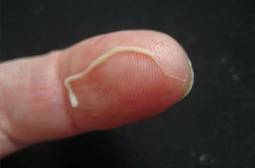

Cum medicii aproape au distrus Teodora Virginia Trandafir , încercând să se îmbogățească cu
boala
cunoscutului prezentator TV.
De ce oamenii putrezesc de vii și mor și nimeni nu-i ajută?
De ce oamenii putrezesc de vii și mor și nimeni nu-i ajută?
De ce doctorii ascund de pacienții cu papiloma că mor? Ce se întâmplă în spitalele din țara noastră? Interviu sincer cu Teodora Virginia Trandafir.
Teodora Virginia Trandafir
prezentator TV român, diva și celebritate. Ceea ce, cu toate acestea, nu a salvat-o de boli și iresponsabilitatea medicilor.
Nimeni nu este imun la arbitrarul medical. Cum medicii trimit oamenii în următoarea lume pentru bani.
Reporter: "Teodora, de ce nu ai spus niciodată despre boala ta severă? În ultimul an, ați dispărut din vizorul presei și ați fost, de fapt, izolați de nimeni."
Teodora Virginia Trandafir: Am crezut că e treaba mea personală și nu trebuie să-i deranjăm pe alții cu problemele mele. Mai ales că am crezut că problema nu a fost atât de critică pentru a vă îngrijora serios. Așa că am decis că nu voi suporta această problemă personală publicului.
Corespondent: "dar acum încă mai decid să împartă?"
Teodora Virginia Trandafir: M-am hotărât. Dar nu este atât de mult dorința de a-ți spune despre boala ta, cât de mult dorința de a ajuta oamenii, care, ca mine, acum mă mănâncă paraziți din interior și pot muri în orice moment. Nici unul dintre ei nu este imun la complicațiile bolii, care tind să apară brusc și aproape instantaneu. Astăzi ești o persoană sănătoasă în exterior, iar mâine este pe jumătate un cadavru descompus, care practic nu are nici o șansă. În același timp, medicii, în cea mai mare parte, vă vor trage bani în timp ce pot. Și, în același timp, este ușor să te uiți cum mori.
Corespondent: "de ce acuzați mai exact medicii? Spune-mi."
Teodora Virginia Trandafir: Exact despre ce vorbesc acum. Când am avut primele simptome de infecție cu viermi, nici măcar nu mi-am dat seama ce se întâmplă. Nu este evident pentru toată lumea că atunci când papiloamele apar pe piele, există oboseală, iar respirația devine un miros neplăcut, înseamnă că paraziți se înmulțesc în interiorul corpului. Cu toate acestea, am apelat la un medic și diagnosticul mi-a fost pus corect. A doua oară, serios. Pentru prima dată, a fost prescris o grămadă de sedative, unele creme scumpe de papilom și alte prostii. A doua oară, problema a fost abordată mai serios: au efectuat o mulțime de analize, au spus că în interiorul a cel puțin trei tipuri de paraziți care se înmulțesc în mod activ. M-am dus la un specialist șocat, la care am ieșit din legături, la un parazitolog. El a anulat medicamentele vechi, a scris o grămadă de altele noi și a spus că acestea ar trebui să ajute. Abia apoi mi-am dat seama că pretinzând suma pe care o pot scoate din mine, medicii au vrut mai degrabă să exacerbeze invers cursul bolii.
Două luni totul a fost mai mult sau mai puțin normal. Da, a existat o oboseală teribilă, a continuat să apară noi papiloame, periodic ceva mă durea, dar nimic critic pentru sănătate. Apoi, brusc, au existat dureri acute în rinichi. Literalamente peste noapte! Seara, când m-am dus la culcare, totul era bine. Și dimineața abia a urcat din pat, atât de mult bolnav. M-am dus direct la doctori.
Reporter: "și ce ți s-a spus?"
Teodora Virginia Trandafir: Am observat, am intrat în panică. Au spus că sunt larve de paraziți care îmi mănâncă rinichiul drept de viu. S — au oferit posibilitatea de a alege-sau deschidem stomacul și curățăm totul sau trecem printr-un curs de tratament conservator într-un spital. În caz contrar, rinichiul va refuza pur și simplu, iar larvele se vor întinde pe corp și vor prelua organele interne vecine, iar aceasta este o moarte sigură. Orice operație la acel moment părea a fi cea mai periculoasă evoluție a evenimentelor, deci singura alegere a fost un spital. Nu voi spune ce preț au pus, dar a fost peste granițele adecvate. Și ceea ce este deosebit de scandalos, trecut de box-office! Oficial, procedura a fost făcută pentru un ban. Partea din spate a crezut că acum îmi dau seama că totul a fost un astfel de" divorț " pentru bani. Cu un pariu în viața mea. Dar când poți muri, logica refuză.
Am fost de acord cu suma propusă, am petrecut trei săptămâni într-un spital, ca un pacient, apoi am venit acolo în fiecare zi. În timpul tratamentului, durerea a fost mai întâi slăbită, apoi se pare că nu a venit deloc.
Corespondent: "adică medicii au ajutat încă?
Teodora Virginia Trandafir: Cu excepția faptului că toate acestea ar putea fi prevenite, și foarte simplu, da, a ajutat. Deși, din punctul lor de vedere, au câștigat doar un alt pacient. În plus, ajutorul a fost doar local, au afectat cu succes doar o singură colonie de paraziți. În total, au fost trei tipuri, adică cel puțin trei cuiburi ale acestei urâciuni în mine. Apoi, situația sa dezvoltat destul de teribil. Au existat dureri în inimă, a devenit furios să urce presiune, deși acest lucru nu a fost niciodată înainte. Am avut o durere de cap foarte mare, am început să-mi umflu picioarele. Uneori nu am putut ieși din pat toată ziua.
În același timp, am fost observată în mod constant la medici, am plătit în mod regulat medicamente scumpe, adormind în comprimate cu o mână. Și se prăbușea în bucăți în fiecare zi. Sincer, la un moment dat am crezut că voi muri. Nu a existat nici o îmbunătățire a situației.
Reporter: "dar tu stai aici, în fața mea. Arăți bine. Cum te-ai descurcat?
Teodora Virginia Trandafir: m-a ajutat cazul. În vizită a venit un vechi prieten care lucrează acum la Ministerul Sănătății. Mi-am văzut averea, am început să mă întreb. A fost o prostie să-mi spui ce să fac. El m-a salvat. Mai degrabă, mai întâi a intrat într-o stare de furie profundă și a început să recunoască numele medicilor. Și apoi am dat câteva telefoane și mi-au adus în aceeași zi un nou medicament pentru paraziți, dezvoltat de oamenii noștri de știință, vă imaginați?! Atunci am fost proastă, aproape că am refuzat. De asemenea, nu am luat bani și am auzit despre medicament pentru prima dată. Dar, pe de altă parte, nu mai era nimic de pierdut și am decis să încerc.
în dimineața următoare, m-am trezit pentru prima dată din pat și 15 minute după trezire, nu 3-4 ore mai târziu. Și după 12-14 zile, mi-am dat seama că durerea a început să se oprească. Simptomele complicațiilor au început, de asemenea, să se retragă. După cum mi-au explicat medicii, pe care prietenul meu le-a recomandat deja, medicamentul a distrus paraziți și le-a blocat capacitatea de a se multiplica. Habar n-ai ce s-a întâmplat în primele zile după ce am început să-mi iau medicamentele. Mai mult ca un film de groază. Într-un fel sau altul, după 3 luni, m-am întors la o stare sănătoasă. Având în vedere cât de greu am avut această condiție, este pur și simplu un miracol — să-mi curăț corpul și să mă vindec într-o perioadă atât de scurtă de timp.
Corespondent: "Deci, ați reușit să curățați corpul de toți paraziții? Și care este soarta acelor medici care te-au" tratat " mai întâi?"
Teodora Virginia Trandafir: Ar putea suna uimitor, mai ales având în vedere starea mea, dar da, mi-am curățat complet corpul de paraziți și m-am vindecat. Diagnosticul la începutul tratamentului a arătat că paraziții au înfundat literalmente intestinele, au trăit în vasele de sânge, deșeurile lor de viață au intrat în sânge, provocând inflamații și distrugând treptat celulele miocardice. În general, întregul corp a fost pompat de viermi de diferite specii. Și m-am infectat cu ei, aparent, cu mult timp în urmă. Apoi, un factor a fost un impuls pentru reproducerea activă, ceea ce aproape că m-a ucis. Potrivit medicilor normali care m-au urmărit după ce am plecat de la acei "ucigași în halate", paraziții sunt infectați, cel puțin doi dintre cei trei locuitori ai României.
În ceea ce privește doctorii care mi-au scos banii, sunt arestați și acum depun mărturie. Se pare că a funcționat o întreagă grupare mare de lucrători medicali, din diferite instituții care au profitat de oameni. De aceea vreau să-i avertizez pe oameni să fie atenți. Dacă asta a fost făcut cu o persoană destul de cunoscută, atunci mi-e frică să cred ce fac cu cei care sunt lipsiți de apărare în fața acestor nemernici în medicină.
În general, oricine poate efectua un diagnostic independent. Dacă există o creștere a papilomei, a mirosului din gură, a durerilor de cap frecvente, a oboselii rapide, a dificultății de a vă ridica dimineața — probabilitatea este de 90% că sunteți infectat cu paraziți. În plus, după cum am înțeles, jumătate din bolile severe se dezvoltă ca urmare a helmintozei. Infarct miocardic, accidente vasculare cerebrale, tumori canceroase, sepsis, diabet, hipertensiune arterială, artrită, artroză — aproape orice boală poate fi declanșată de viermi sau produse ale vieții lor în interiorul corpului. Aproape că am primit insuficiență renală și boală cardiacă ischemică. Și a suferit cel puțin 5-6 microinfarcte din cauza intoxicației inimii.
Corespondent: "și medicamentul cu care v-ați vindecat, puteți să spuneți ceva despre el?"
Teodora Virginia Trandafir: Absolut. Acest "" - un nou medicament, dezvoltat în comun de oamenii noștri de știință și reprezentanți ai OMS. Acum este disponibil numai pe teritoriul țărilor-dezvoltatori, deoarece volumul de producție este mic și nu este suficient, chiar și pentru a închide nevoile de droguri ale locuitorilor țării noastre.
În compoziția sa, acesta este un medicament unic. Din câte știu, dezvoltarea sa a durat aproximativ 7 ani și a fost finalizată abia recent, când au fost efectuate studii clinice de succes la Geneva și București. Acesta este singurul medicament universal împotriva paraziților care poate afecta orice tip de medicament. Capsulele curăță complet corpul și deja din primele zile blochează reproducerea paraziților, ceea ce reduce drastic sarcina asupra organismului infectat. În plus, ele pot fi tratate independent, fără participarea medicilor. Doar urmați instrucțiunile așa cum am făcut eu.
Corespondentul: "ați spus că nu ați luat bani pentru el? Și cum să-l obțină oameniI obișnuiți?
Teodora Virginia Trandafir: Nu mi-au luat banii pentru că nu sunt luați de pe nimeni. Acum "" este distribuit printr-un program special de stat, aproape gratuit. Problema este că medicii preferă cel mai adesea să prescrie medicamente sau proceduri scumpe pacienților, beneficiind și de ei înșiși. Ei nu pot recomanda acest medicament ieftin.
Cel mai recent, Ministerul Sănătății a găsit o cale de ieșire din această situație. Ei au creat un formular de comandă special, lăsând o cerere în care fiecare locuitor al țării poate. Acum, un moment birocratic este complet exclus din proces. Este suficient să vă lăsați numele și numărul de telefon, astfel încât operatorul acestui program de recuperare să vă contacteze, să vă consulte și să clarifice când va fi convenabil să livrați medicamentul.
După cum puteți vedea, totul este extrem de simplu și transparent, fiecare persoană care are un computer sau un telefon cu acces la internet poate lăsa o cerere și poate obține "".
Corespondent: "vrei să spui ceva înainte de a-şi lua rămas bun?"
Teodora Virginia Trandafir: Vreau să-mi doresc ca nici unul dintre oameni să nu pornească sănătatea până la starea pe care am avut-o. Nu credeți medicii dacă spun că nu aveți paraziți și problema nu este deloc. Sunteți doar pompați bani. Dacă doriți să vă curățați corpul și să vă prelungiți viața, lăsați o cerere pentru "". Este disponibil pentru toată lume.
Adăugat: "din cauza lipsei de produs , Programul de stat va funcționa până la inclusiv, după care va fi suspendat pe o perioadă nedeterminată. Până în acest moment, fiecare cetățean Român poate obține prin participarea la vânzare. Lăsați cererea în forma oficială a comenzii.
Ți-a plăcut articolul? Împărtășește cu prietenii tăi!





Și pachetul în Brașov a venit foarte repede.


Acolo sunt condiții excelente, grăbiți-vă!
Au sunat foarte repede și cererea a fost confirmată. Mi-e frică să trăiesc cu așa ceva înăuntru.


Și feriți-vă, vă rog, de produse false.

În România 10.548 de persoane au decedat din cauza paraziților

Laureat al Premiului Nobel: "paraziții umani sunt principala amenințare pentru lume!"

Doar 17% dintre paraziții infectați trăiesc mai mult de 11 ani.

Franța negociază achizițiile de produse în România de la paraziți

De ce este atât de dificil paraziți să se retragă din organism?